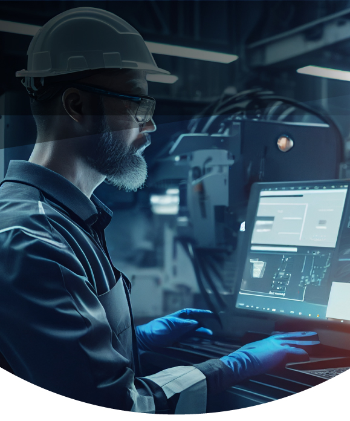
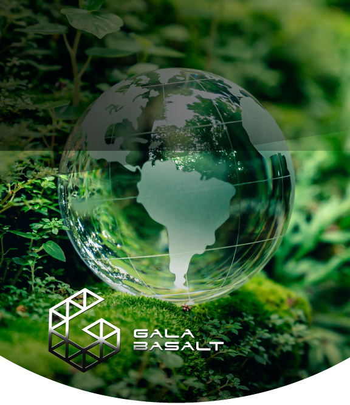
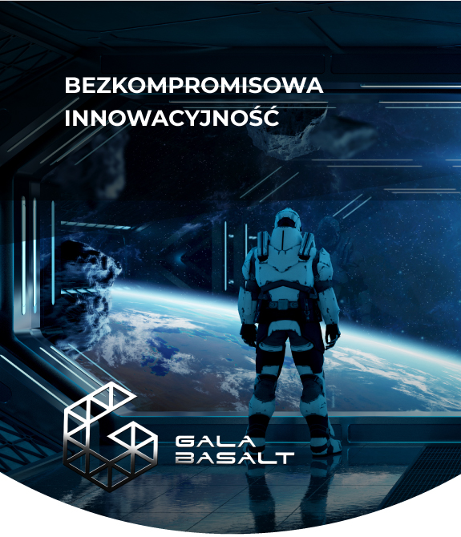

ADVANTAGES OF THE MATERIAL
UNCOMPROMISING QUALITY
UNCOMPROMISING QUALITY
- In order to ensure the highest quality and cost-effectiveness of our products , we plan to incorporate over 10 exclusive technologies into our production process. This strategy will provide us with a competitive edge.
- All components of production and technological lines will be produced in Europe, ensuring top-notch quality and certification. We will also entrust construction, legal services, and audits to European-based companies and institutions.
- Our aim is to maintain a consistently high standard for all our products, starting with the consistent quality of basalt roving. To do this, we automate all technological processes, starting from the supply of raw materials and ending with the packaging of the final product. There will be minimal manual labor in our work.
- We will have a technological laboratory at the production site to oversee and assure the highest product quality.
ADVANTAGES OF THE MATERIAL

UNCOMPROMISING ECOLOGICAL SUSTAINABILITY
UNCOMPROMISING ECOLOGICAL SUSTAINABILITY
- Waste-free production in a closed cycle;
- Manufacturing processes that prevent pollution of soil and atmosphere;
- Raw materials from surface mining, which is more ecological and eliminates the need for deep mines and complex production systems;
- Natural, non-toxic and eco-friendly materials;
- Guarantee of up to 100% recycling;
- Ecological alternatives for steel and metal plastics.
MATERIAL PERSPECTIVES
UNCOMPROMISING INNOVATION
UNCOMPROMISING INNOVATION
Basalt composites hold the promise to spearhead the forthcoming technological revolutions. Our team possesses the scientific knowledge and creativity to innovate new composite technologies using basalt roving, propelling us to the forefront of advanced technologies in various production sectors. This is our opportunity to contribute to the progress of high-tech solutions and demonstrate our commitment to the well-being and health of future generations.